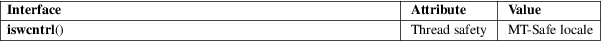

iswcntrl − test for control wide character
Standard C library (libc, −lc)
#include <wctype.h>
int iswcntrl(wint_t wc);
The iswcntrl() function is the wide-character equivalent of the iscntrl(3) function. It tests whether wc is a wide character belonging to the wide-character class "cntrl".
The wide-character class "cntrl" is disjoint from the wide-character class "print" and therefore also disjoint from its subclasses "graph", "alpha", "upper", "lower", "digit", "xdigit", "punct".
For an unsigned char c, iscntrl(c) implies iswcntrl(btowc(c)), but not vice versa.
The iswcntrl() function returns nonzero if wc is a wide character belonging to the wide-character class "cntrl". Otherwise, it returns zero.
For an explanation of the terms used in this section, see attributes(7).

C11, POSIX.1-2008.
POSIX.1-2001, C99.
The behavior of iswcntrl() depends on the LC_CTYPE category of the current locale.
iscntrl(3), iswctype(3)